Lompat ke Kluster A · Kluster B · Materi lama. Latihan dan simulasi interaktif ada di halaman utama Virtual Lab.
Kluster A · 14 pertemuan
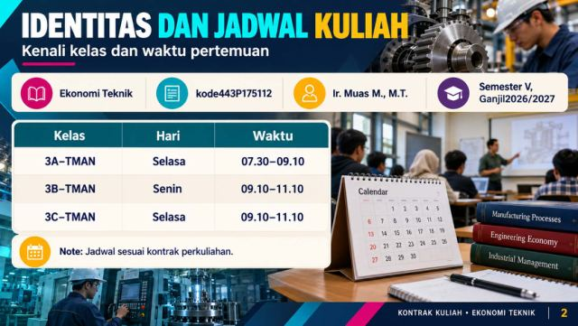
PERTEMUAN 01Kontrak Perkuliahan🖼️ Slide (10)
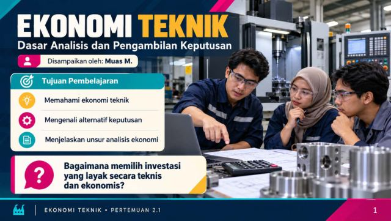
PERTEMUAN 02Dasar Analisis dan Pengambilan Keputusan🖼️ Slide (10)
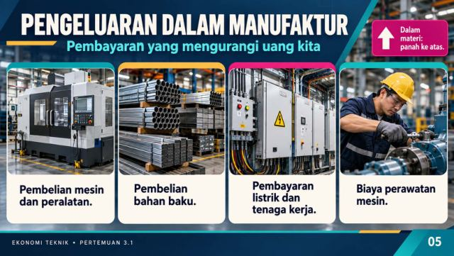
PERTEMUAN 03Diagram Aliran Dana (Cash Flow Diagram)🖼️ Slide (10)
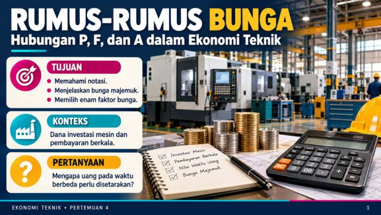
PERTEMUAN 04Rumus-Rumus Bunga dan Enam Faktor Bunga🖼️ Slide (10)
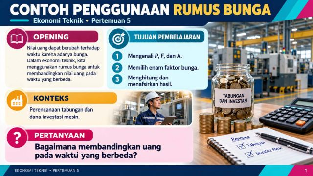
PERTEMUAN 05Contoh Penggunaan Rumus Bunga🖼️ Slide (10)
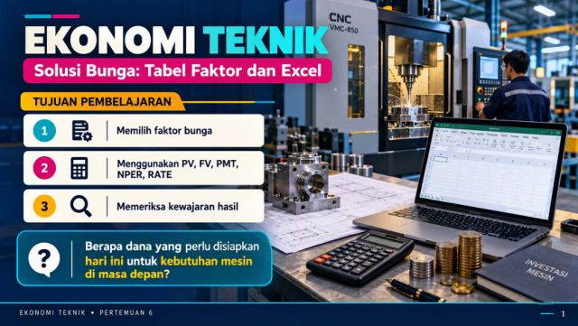
PERTEMUAN 06Solusi Bunga dengan Tabel Faktor dan Excel🖼️ Slide (10)
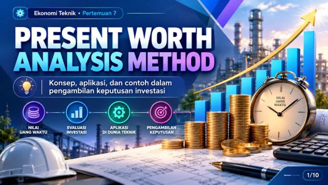
PERTEMUAN 07Analisis Present Worth (Nilai Sekarang)🖼️ Slide (24)
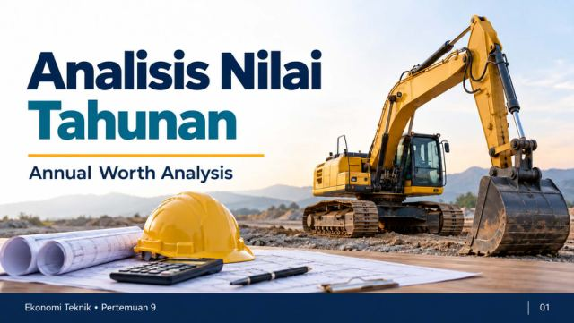
PERTEMUAN 09Analisis Nilai Tahunan (Annual Worth)🖼️ Slide (16)
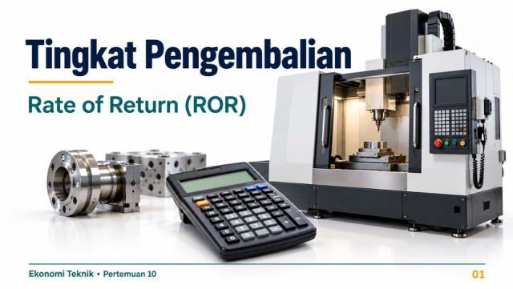
PERTEMUAN 10Tingkat Pengembalian (Rate of Return)🖼️ Slide (9)
PERTEMUAN 11Internal Rate of Return (IRR) dan NPV🖼️ Slide (43)
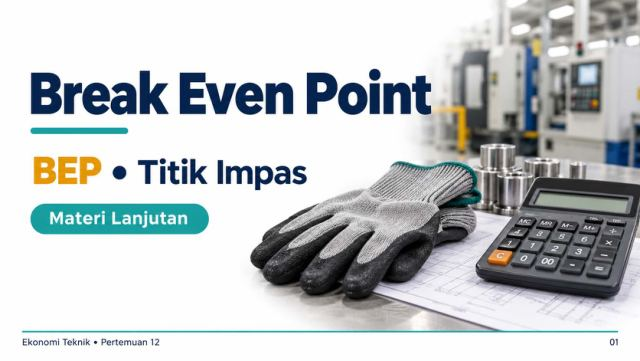
PERTEMUAN 12Break Even Point (Titik Impas) dan Analisis Sensitivitas🖼️ Slide (23)
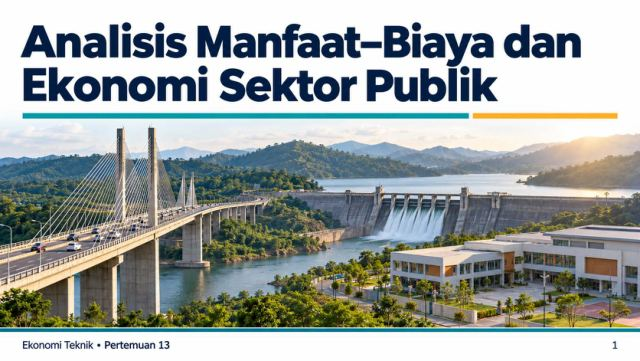
PERTEMUAN 13Analisis Manfaat-Biaya (BC) dan Sektor Publik🖼️ Slide (21)
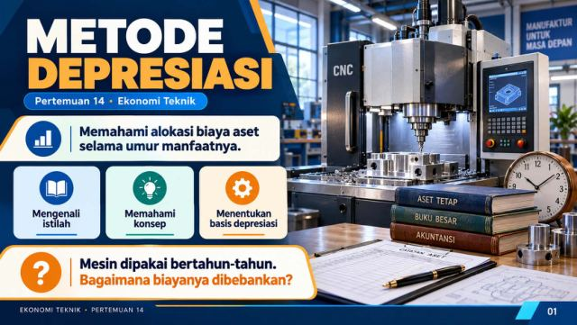
PERTEMUAN 14Metode Depresiasi (Garis Lurus, SOYD, DDB, Sinking Fund)🖼️ Slide (36)
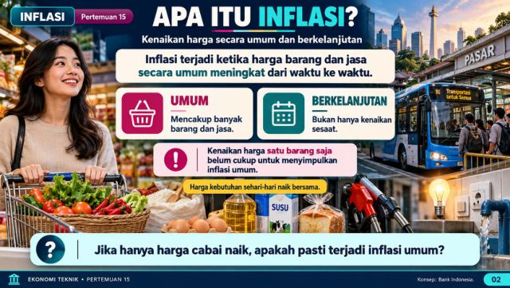
PERTEMUAN 15Inflasi dan Perekonomian (PDB dan Pertumbuhan Ekonomi)🖼️ Slide (25)
Kluster B · 19 bab (slide + bahan ajar)
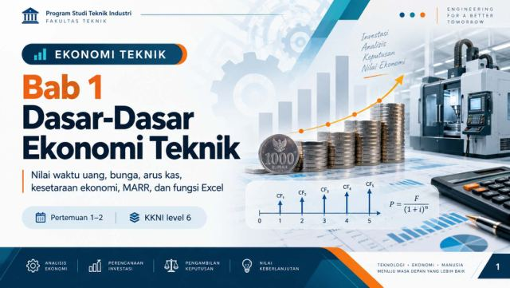
BAB 01Dasar-Dasar Ekonomi Teknik🖼️ Slide (29)📘 Bahan ajar (42 hlm)
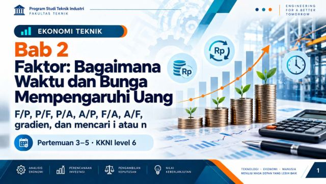
BAB 02Faktor - Bagaimana Waktu dan Bunga Mempengaruhi Uang🖼️ Slide (31)📘 Bahan ajar (39 hlm)
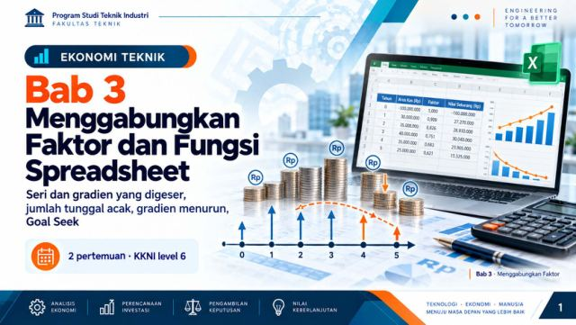
BAB 03Menggabungkan Faktor dan Fungsi Spreadsheet🖼️ Slide (29)📘 Bahan ajar (32 hlm)
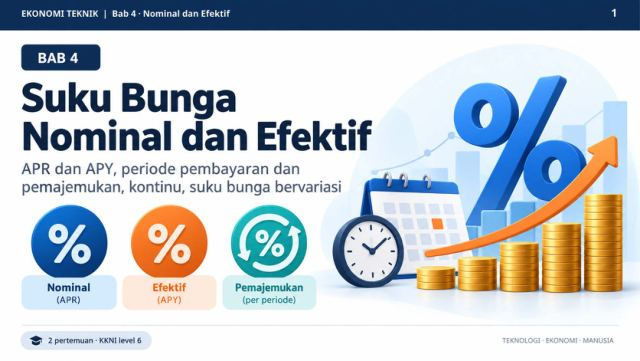
BAB 04Suku Bunga Nominal dan Efektif🖼️ Slide (30)📘 Bahan ajar (40 hlm)
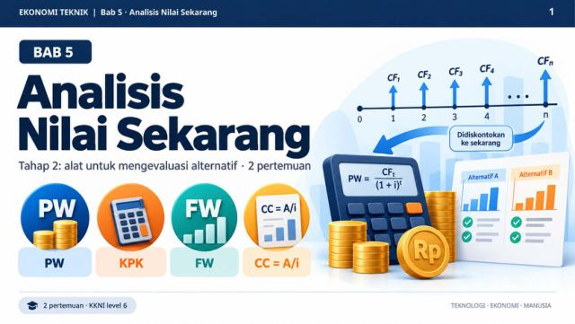
BAB 05Analisis Nilai Sekarang🖼️ Slide (30)📘 Bahan ajar (34 hlm)
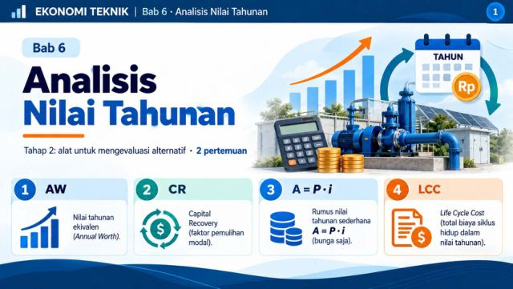
BAB 06Analisis Nilai Tahunan🖼️ Slide (30)📘 Bahan ajar (36 hlm)
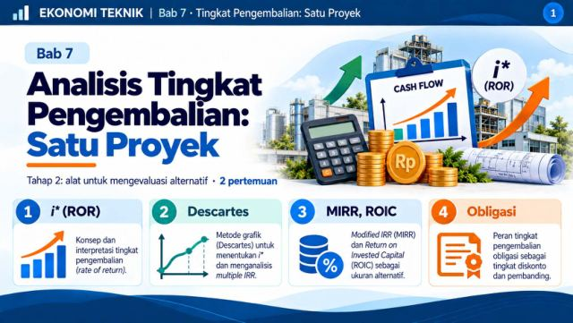
BAB 07Analisis Tingkat Pengembalian - Satu Proyek🖼️ Slide (30)📘 Bahan ajar (41 hlm)
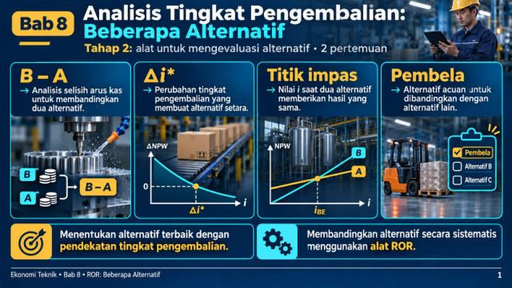
BAB 08Analisis Tingkat Pengembalian - Beberapa Alternatif🖼️ Slide (30)📘 Bahan ajar (37 hlm)
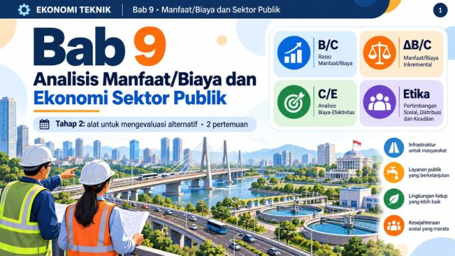
BAB 09Analisis Manfaat-Biaya dan Ekonomi Sektor Publik🖼️ Slide (30)📘 Bahan ajar (42 hlm)
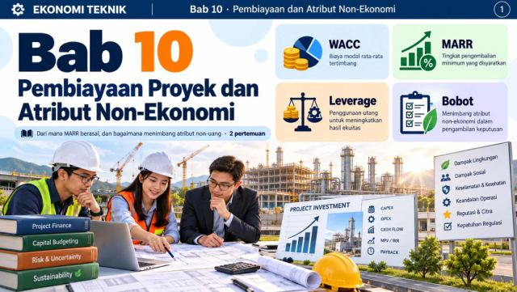
BAB 10Pembiayaan Proyek dan Atribut Non-Ekonomi🖼️ Slide (30)📘 Bahan ajar (37 hlm)
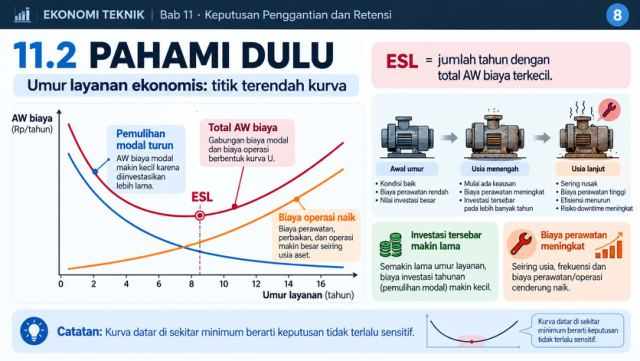
BAB 11Keputusan Penggantian dan Retensi🖼️ Slide (30)📘 Bahan ajar (35 hlm)
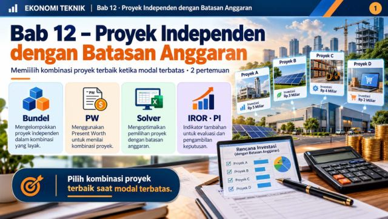
BAB 12Proyek Independen dengan Batasan Anggaran🖼️ Slide (30)📘 Bahan ajar (34 hlm)
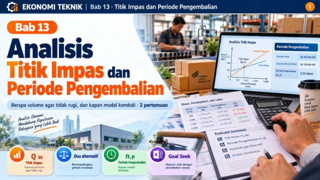
BAB 13Analisis Titik Impas dan Periode Pengembalian Modal🖼️ Slide (30)📘 Bahan ajar (33 hlm)
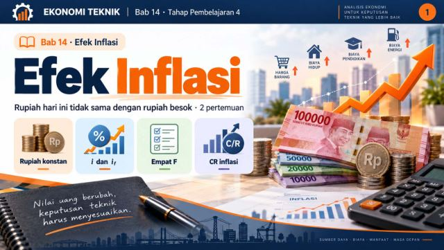
BAB 14Efek Inflasi🖼️ Slide (30)📘 Bahan ajar (32 hlm)
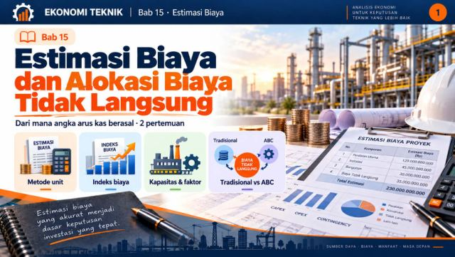
BAB 15Estimasi Biaya dan Alokasi Biaya Tidak Langsung🖼️ Slide (30)📘 Bahan ajar (39 hlm)
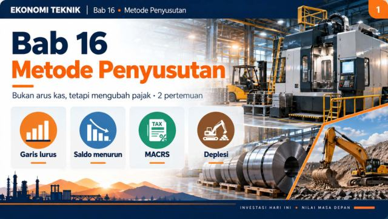
BAB 16Metode Penyusutan🖼️ Slide (30)📘 Bahan ajar (37 hlm)
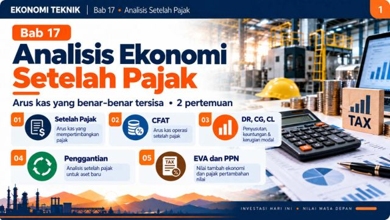
BAB 17Analisis Ekonomi Setelah Pajak🖼️ Slide (30)📘 Bahan ajar (39 hlm)
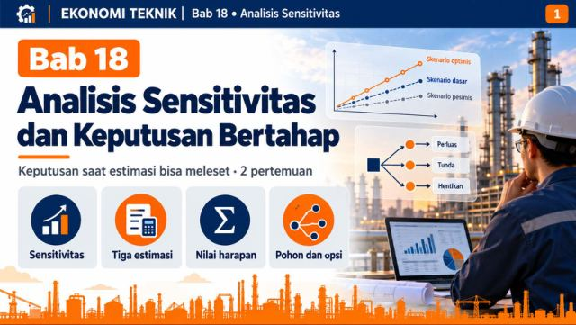
BAB 18Analisis Sensitivitas dan Keputusan Bertahap🖼️ Slide (30)📘 Bahan ajar (46 hlm)
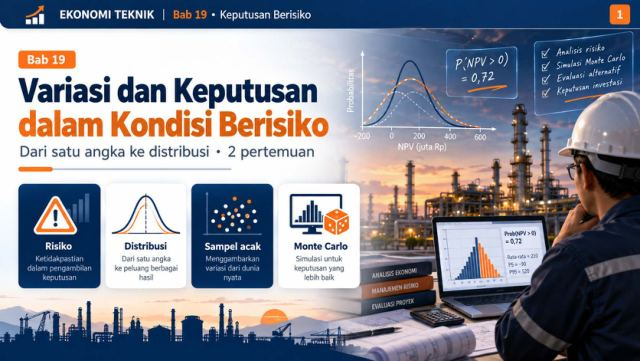
BAB 19Variasi dan Pengambilan Keputusan dalam Kondisi Berisiko🖼️ Slide (30)📘 Bahan ajar (37 hlm)
Materi lama · pertemuan 11–15
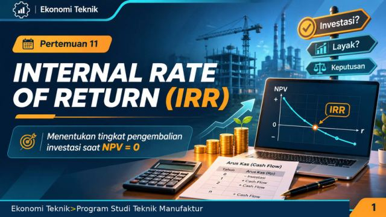
PERTEMUAN 11IRR dan NPV🖼️ Slide (20)
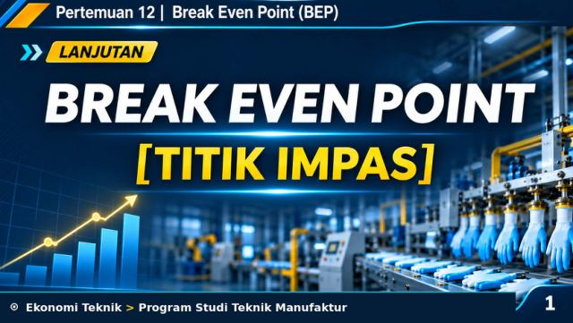
PERTEMUAN 12Break Even Point (Titik Impas) dan Analisis Sensitivitas🖼️ Slide (21)
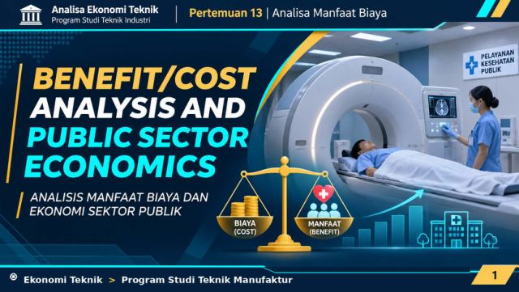
PERTEMUAN 13Analisis Manfaat-Biaya dan Ekonomi Sektor Publik🖼️ Slide (20)
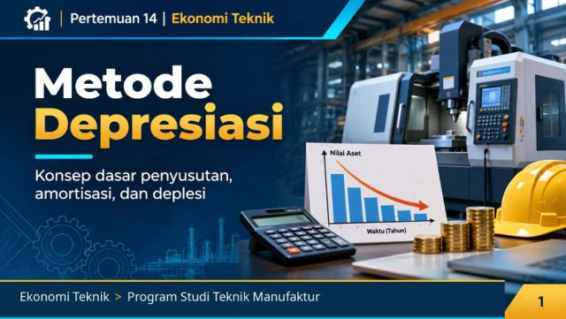
PERTEMUAN 14Metode Depresiasi - Penyusutan, Amortisasi, dan Deplesi🖼️ Slide (21)
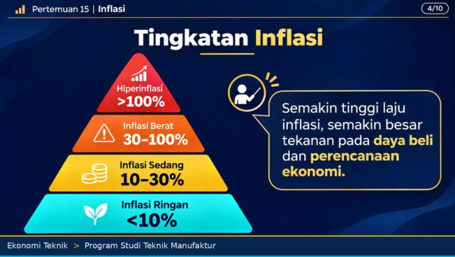
PERTEMUAN 15Inflasi dan Suku Bunga Riil🖼️ Slide (26)